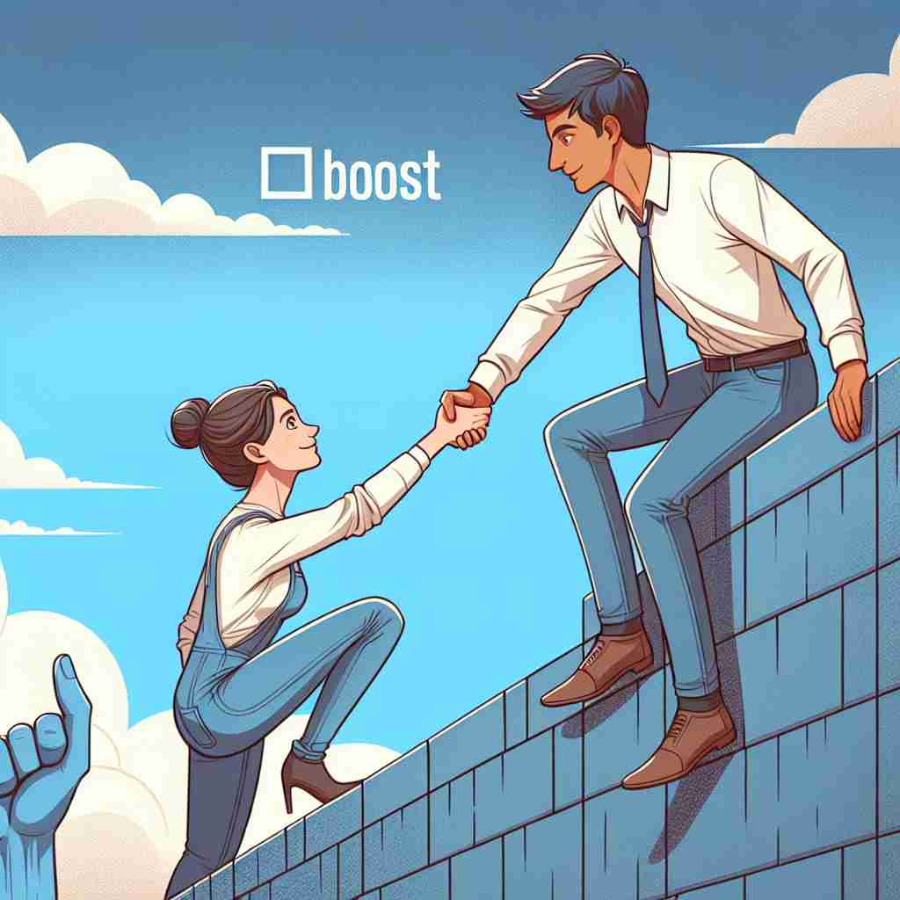

💬 She wants to boost him up to help him reach the top. 她想帮助他提升自己，以便他能达到顶峰。

💬 The engines are designed to boost the rocket into space. 这些发动机旨在将火箭送入太空。
💬 She works hard every day to boost her career. 她每天都努力工作以提升自己的事业。
💬 She wants to boost him up to help him reach the top. 她想帮助他提升自己，以便他能达到顶峰。
💬 The engines are designed to boost the rocket into space. 这些发动机旨在将火箭送入太空。
💬 She works hard every day to boost her career. 她每天都努力工作以提升自己的事业。
🧠 想象一个向上推动的动作，这就是'boost'的核心含义。无论是提升经济、增加信心，还是非法获取物品，都可以联想到这个向上推动的动作。这个核心概念贯穿了'boost'的各种用法，有助于更好地理解和记忆它的多重含义。
🔈 [buːst]
🗝️ v. to push or lift from below to increase or improve something 从下方推动或抬起，以增加或改善某物
🎭 在游乐园里，一个小孩尝试爬上一堵高墙来滑下滑梯。爸爸蹲下来，用双手托住他的脚，轻轻一推，帮助他爬到了顶端。这一动作体现了'boost'作为从下方推或抬以提升某物的含义。
💬 The new policy is designed to boost the economy. 新政策旨在促进经济发展。
🌳 boost 是一个基础动词，常被用来表示 '提高，增加' 的意思。它没有明显的词根词缀构成，但可用于构成新词，如 booster。
💡 可以将 'boost' 联想成一种激励或推进的动作，比如 '提升信心'（boost confidence），通过与正面提升相关的情境场景联系，来帮助记忆。
🗝️ v. to increase or improve 增加或改善
🎭 在一个会议室里，销售团队正在讨论如何提高季度业绩。团队经理建议通过新市场营销策略来'boost'销售额，展示了'boost'表示增加或改善的含义。
💬 The company's sales were boosted by the new advertising campaign. 公司的销售受到新广告活动的推动。
🤔 从下方"推动"导致上升或改善
🗝️ v. to help or encourage 帮助或鼓励
🎭 在一场中学运动会上，教练对即将上场的运动员说：'加油！你们能赢的！'这些鼓励的话语有效地提升了运动员的自信心，展示了'boost'作为帮助或鼓励的含义。
💬 Her kind words boosted my confidence. 她的鼓励让我信心倍增。
🤔 像"推动"一样给予支持或鼓励
🗝️ v. to steal 偷窃
🎭 在一个繁忙的购物中心，两名小偷悄悄接近一辆停在角落的自行车，不被注意地'boost'了这辆车，体现了'boost'表示偷窃的含义。
💬 He was caught boosting goods from the store. 他被抓到在商店里偷窃商品。
🤔 非法"提升"物品的所有权
🗝️ n. an increase or improvement 增加或改善
🎭 在一个公司的年度总结会上，CEO提到去年公司的利润有了显著的'boost'，展示了'boost'作为一个增加或改善的名词使用。
💬 The tax cut gave a boost to consumer spending. 减税促进了消费支出。
🤔 由"推动"行为产生的结果
🗝️ n. help or encouragement 帮助或鼓励
🎭 在一个才艺表演中，一位选手站在舞台上感到紧张，后台的妈妈给他一个拥抱，说：'你可以做到的！'这种支持给予了选手巨大的'boost'，帮助他在舞台上表现精彩。
💬 Your support gave me the boost I needed to finish the project. 您的支持给了我完成这个项目所需的动力。
🤔 推动"行为带来的支持或鼓励